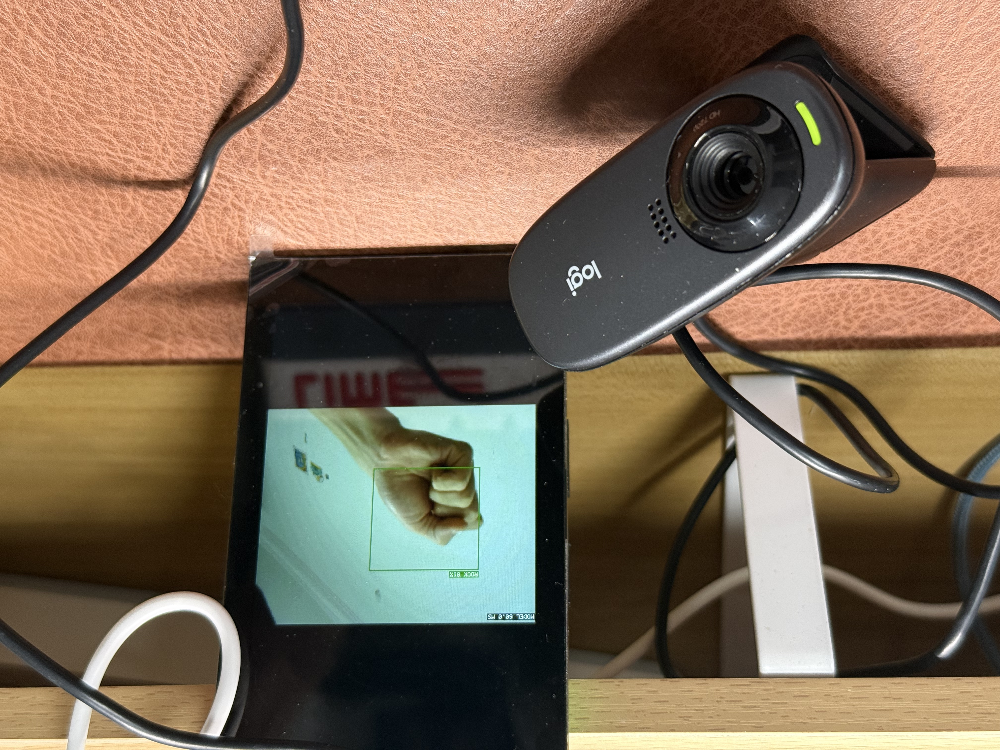
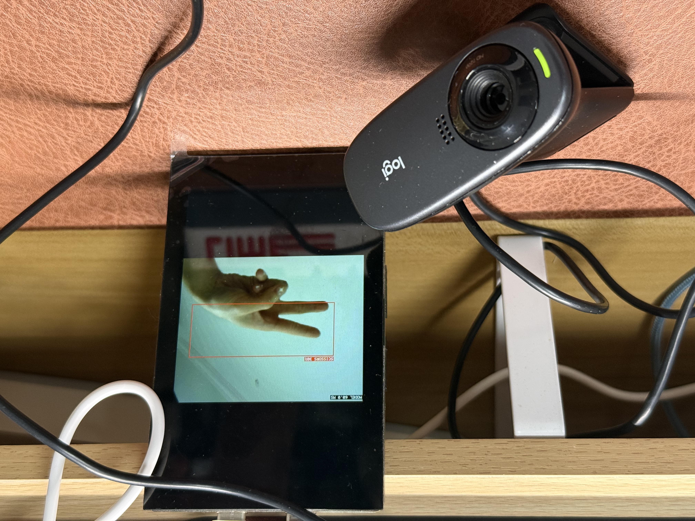
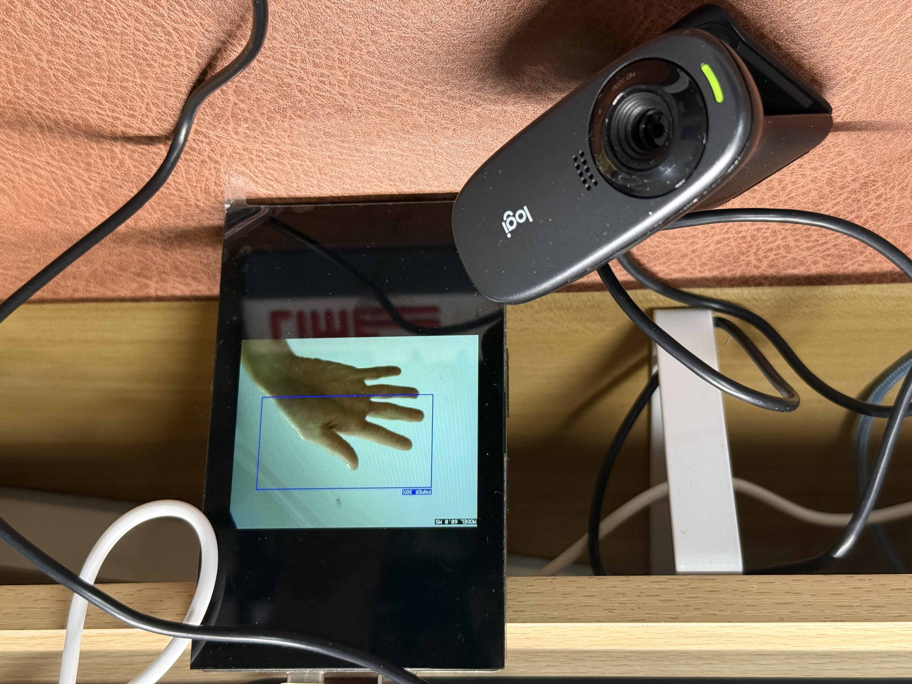

Edgi_Talk_M55_DEEPCRAFT_Deploy_Vision
1. 项目简介
本工程是 PSOC Edge MCU: Machine learning - DEEPCRAFT deploy vision 的 RT-Thread 实现版本，运行在 Edgi-Talk 的 CM55 核心上，使用：
CherryUSB Host (DWC2, Infineon)
UVC USB 摄像头采集
DEEPCRAFT/TFLM 模型推理
LCD 实时显示检测框与标签
工程目标与 ModusToolbox 示例一致：实时视觉目标检测 + 串口日志输出；区别在于系统框架切换为 RT-Thread（MSH、SCons、RT-Thread Studio）。
2. 与原始 ModusToolbox 示例的主要差异
OS/工程体系：ModusToolbox -> RT-Thread 工程组织与配置方式
运行控制：通过 MSH 命令启动/停止 UVC 流（
usbh_uvc_start/usbh_uvc_stop）USB 应用层：位于
libraries/Common/board/ports/usbAI 应用层：位于
libraries/Common/deepcraft_ai与applications/uvc_ai_app.c模型文件已单独整理到：
libraries/Common/deepcraft_ai/model/model.clibraries/Common/deepcraft_ai/model/model.h
3. 目录说明（关键路径）
应用入口：
applications/main.cAI 应用逻辑：
applications/uvc_ai_app.cUVC 应用层：
libraries/Common/board/ports/usb/usbh_uvc_app.cUVC 流处理：
libraries/Common/board/ports/usb/usbh_uvc_stream.c模型文件：
libraries/Common/deepcraft_ai/model/model.c、libraries/Common/deepcraft_ai/model/model.hAI 核心处理：
libraries/Common/deepcraft_ai/src/uvc_ai.c
4. 环境与依赖
RT-Thread Studio（推荐 2.2.9 或更新）
GNU Arm 工具链（支持 Cortex-M55 + Helium/MVE）
板卡：PSOC Edge E84 系列（Edgi-Talk 对应硬件）
摄像头：UVC USB 摄像头（建议 320x240 YUYV）
显示：工程默认 LCD 配置
说明：本工程依赖 M33 启动链路使能 CM55。若 CM55 不启动，请先确认 M33 工程已正确配置并烧录。
5. 关键配置项
在 rtconfig.h / .config 中建议确认：
RT_USING_CHERRYUSBRT_CHERRYUSB_HOSTRT_CHERRYUSB_HOST_DWC2_INFINEONRT_CHERRYUSB_HOST_VIDEOBSP_USING_DEEPCRAFT_AIRT_USING_MSH、RT_USING_FINSH
如果你需要修改 usbh_uvc_stream.c / usbh_uvc_port.c 并让改动生效，请开启：
RT_CHERRYUSB_HOST_BUILD_FROM_SOURCE
6. 编译与下载
6.1 RT-Thread Studio
导入
projects/Edgi_Talk_M55_DEEPCRAFT_Deploy_Vision检查配置（menuconfig/Settings）
Build
通过 KitProg3 下载
6.2 命令行（SCons）
在工程目录执行：
scons -j8
生成产物如：
rt-thread.elfrtthread.hex
7. 运行步骤
串口连接，115200 8N1
接入 LCD 与 UVC 摄像头
上电启动后在 MSH 执行：
usbh_uvc_start 0 320 240
参数说明：
0= YUYV1= MJPEG
注意：AI 模式会强制使用
YUYV + 320x240（即使输入其他参数也会被修正）。
停止命令：
usbh_uvc_stop
7.1 运行效果截图
图 1：系统运行与检测显示

图 2：摄像头画面与检测框叠加

图 3：终端日志与识别结果输出

8. 日志与现象
UVC 状态日志：
UVC fps:...start uvc stream...
AI 日志：
AI inference ...`AI #… bbox=[…]
9. 异常处理说明
若出现：
uvc abort1/uvc abort2
当前实现会触发简化恢复流程（自动重启 UVC 流）并打印：
UVC stream restart (...)
如频繁出现，可优先排查：
摄像头供电/线材
UVC 带宽与分辨率配置
应用层负载（显示刷新、AI 推理、日志量）
10. 模型替换说明
本工程已采用“模型单独目录”方式管理（参考官方示例结构）：
libraries/Common/deepcraft_ai/model/model.clibraries/Common/deepcraft_ai/model/model.h
替换模型时，请保持导出接口与现有调用一致（如 IMAI_init / IMAI_compute / IMAI_finalize），并重新编译工程。
11. 启动链路（多核）
推荐烧录顺序与链路：
CM33 Secure
CM33 Non-Secure（使能 CM55）
CM55 本工程
若 CM55 无法运行，请先确认 M33 工程中已启用 CM55。